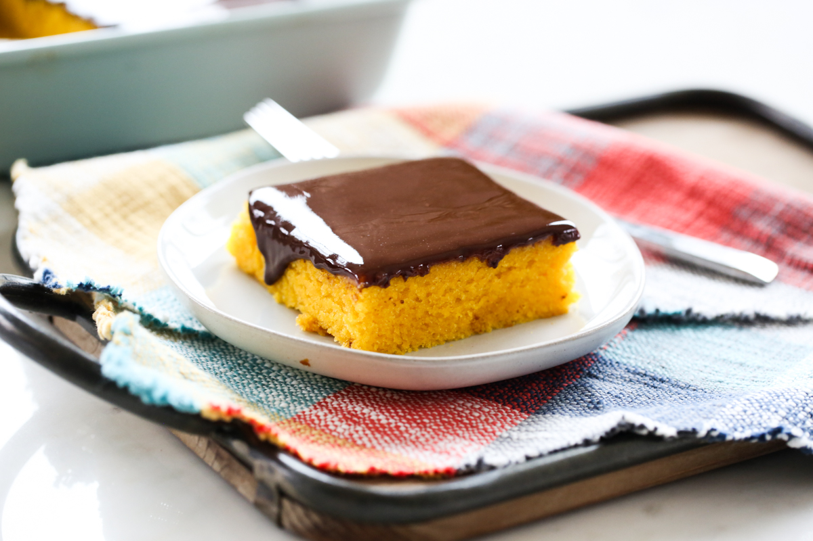

Home
Brazilian Carrot Cake

Description
Brazilian Carrot Cake is completely different from our cinnamon-spiced, cream-cheese frosted versions here in the US. This is a very traditional cake in Brazil; and it’s not something that’s associated with Easter and spring time the way carrot cake here in the US is.
It’s a super simple recipe and the carrots are actually pureed into the batter so it’s completely smooth. They add a perfect subtle sweetness and a beautiful orange color. If you didn’t see the recipe, you probably wouldn’t guess it had carrots in it!
Ingredients
Carrot Cake
- 10 oz carrots
- 3 large eggs
- 1 cup avolcado oil
- 1 3/4 cup white sugar
- 2 cups all purpose flour
- 1/4 teaspoon salt
- 1 tablespoon baking powder
Chocolate Glaze
- 1 cup semi-sweet or dark chocolate chips
- 6 tablespoons butter
- 2 tablespoons corn syrup
Steps
Carrot Cake
- Preheat oven to 350℉. Line a 9"×13" pan with parchment paper.
- Place carrots, eggs, and oil in blender and blend until smooth. I suggest leaving the blender on for a full minute to make sure it's nice and smooth. Add sugar and pulse to combine.
- Add dry ingredients and gently stir with rubber spatula to mix in a bit, scraping sides of blender, and then blend until evenly distributed.
- Pour batter in prepared pan and bake for about 30-40 minutes (depending on your pan, keep an eye on it) and remove from oven when a skewer comes out with just a few moist crumbs attached.
- Let cake cool to just barely warm before icing.
Chocolate Glaze
- To make glaze combine all ingredients in double boiler (simply place a glass bowl over the top of a pot with a couple inches of simmering water in it) and stir until melted and smooth. Alternatively you can also use the microwave.
- Remove from heat and let cool for a few minutes before pouring to top of cake. I like to pour about half the glaze on and spread it out, then slowly add more. If you dump it all on quickly at once, it might just spill over and end up on the bottom since it's thin. It will thicken upon standing so take your time and be gentle.